Dashboards Analíticos — Insights
Tres dashboards fueron diseñados para responder preguntas estratégicas del encargo PNUD/MSPAS, cubriendo las dimensiones de tiempo (pre vs post COVID), causa (CIE-10/GBD), geografía (departamentos de Guatemala) y demografía (sexo, grupo etario).
Dashboard 1: Pre vs Post COVID — Guatemala
Objetivo: Comparar la mortalidad general entre el período pre-COVID (2015-2019) y post-COVID (2020-2024), validando con datos oficiales del MSPAS.
Charts
| # | Visualización | Tipo | Fuente | Qué responde |
|---|---|---|---|---|
| 1.1 | Total Defunciones Pre-COVID (2015-2019) | Big Number + Trend | v_ine_completa |
¿Cuál fue la carga base de mortalidad antes de la pandemia? |
| 1.2 | Total Defunciones Post-COVID (2020-2024) | Big Number + Trend | v_ine_completa |
¿Cómo cambió la mortalidad total después de 2020? |
| 1.3 | Variación Pre vs Post COVID | Big Number | v_ine_completa |
¿Cuál es el cambio porcentual neto entre períodos? |
| 1.4 | Defunciones Mensuales 2015-2024 | Línea (Time Series) | v_ine_completa |
¿Hay patrones estacionales? ¿Se observa el pico COVID-2020/2021? |
| 1.5 | Defunciones por Año — Pre vs Post | Barras Agrupadas | v_ine_completa |
¿Qué años fueron los más letales? ¿Hay tendencia al alza/baja? |
| 1.6 | Tasa de Mortalidad Nacional (MSPAS) | Línea (Time Series) | v_mspas_nacional |
¿Coinciden los datos del INE con la tasa oficial del MSPAS? |
Capturas de gráficas
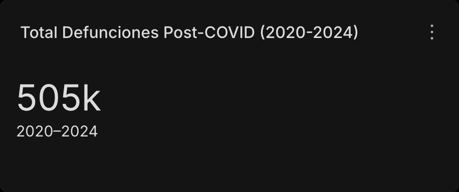
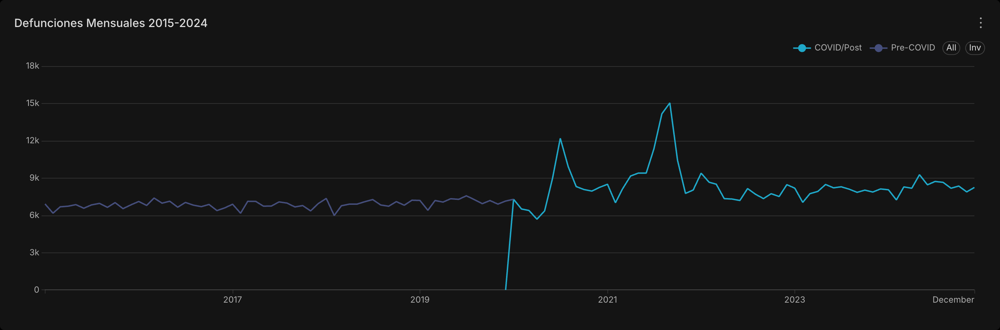
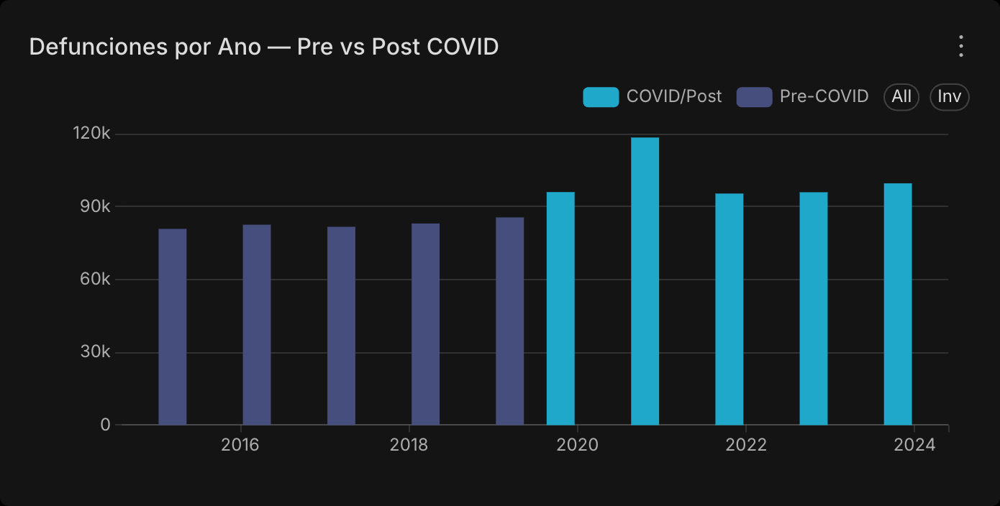
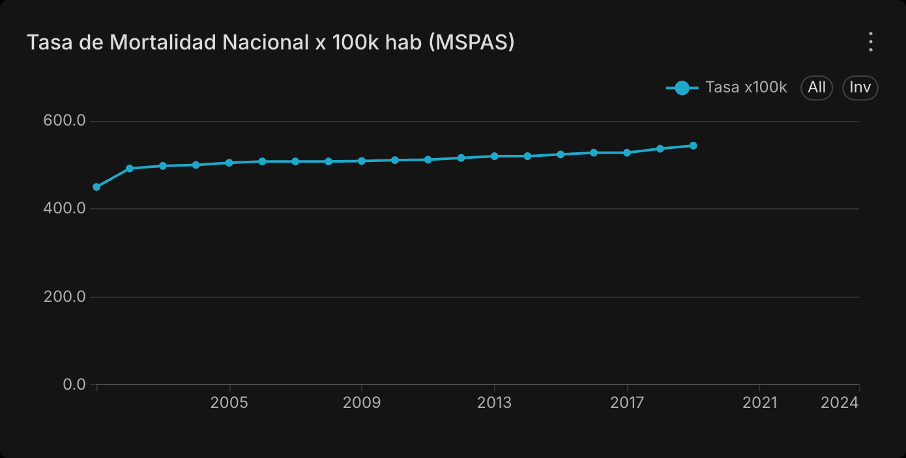
Insights esperados
- Exceso de mortalidad 2020-2021: Se espera un pico pronunciado en 2020 y 2021, reflejando el impacto directo de COVID-19 y el colapso del sistema de salud.
- Efecto persistente 2022-2024: La mortalidad post-pico puede mantenerse elevada respecto al baseline pre-COVID, indicando efectos indirectos (enfermedades crónicas desatendidas, salud mental, interrupción de servicios).
- Validación MSPAS: Los datos del INE (registro individual de defunciones) deberían alinearse con las tasas oficiales del MSPAS para años pre-COVID. Divergencias post-2020 pueden indicar subregistro.
- Estacionalidad: Se espera mayor mortalidad en meses de invierno (noviembre-febrero) por enfermedades respiratorias, patrón que pudo acentuarse durante la pandemia.
Dashboard 2: Causas de Muerte
Objetivo: Desglosar la mortalidad por causa GBD Nivel 2, identificando qué enfermedades cambiaron más su participación relativa entre períodos, y contextualizar Guatemala en Centroamérica.
Charts
| # | Visualización | Tipo | Fuente | Qué responde |
|---|---|---|---|---|
| 2.1 | Defunciones por Causa GBD L2 | Treemap | v_ine_completa |
¿Cuáles son las causas dominantes en Guatemala? |
| 2.2 | Top 10 Causas de Muerte | Treemap | v_ine_completa |
¿Qué ranking tienen las enfermedades? |
| 2.3 | Tendencia Pre vs Post COVID | Línea | v_ine_completa |
¿Cómo cambia la mortalidad total por período a través del tiempo? |
| 2.4 | Tendencia de Causas en Centroamérica (IHME) | Líneas Múltiples | v_ihme_centroamerica |
¿Es Guatemala un caso atípico frente a la región? |
Capturas de gráficas
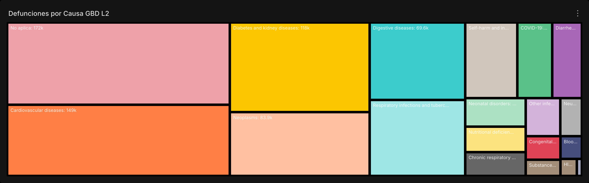
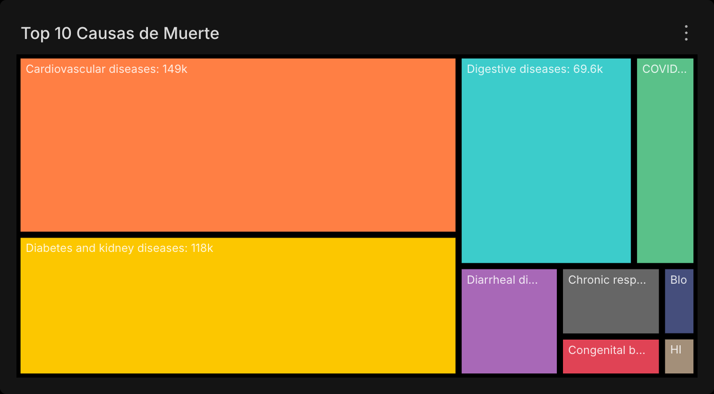
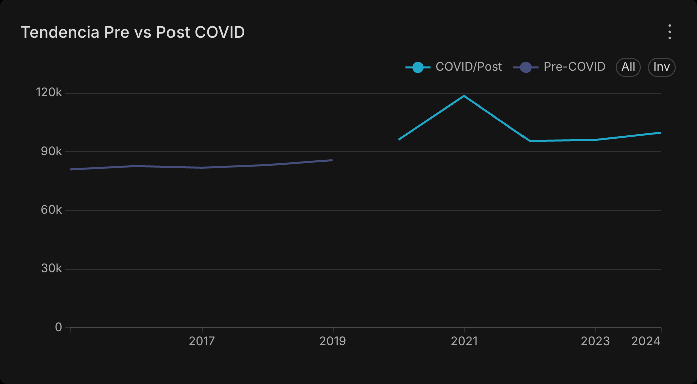
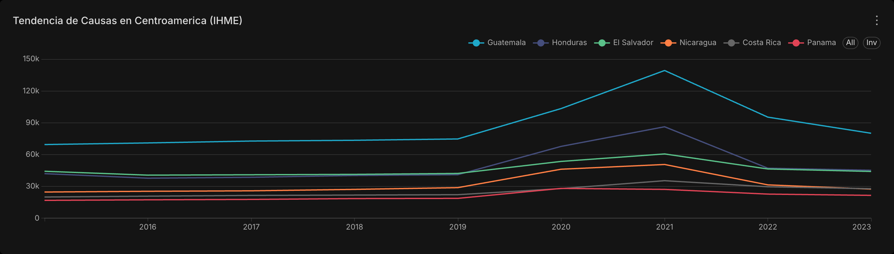
Insights esperados
- COVID-19 como nueva causa principal: A partir de 2020, COVID-19 aparece como causa GBD (código
B.1.22u otro asignado por el crosswalk), desplazando potencialmente a enfermedades cardiovasculares o neoplasias del primer lugar. - Efecto sustitución: Enfermedades crónicas (diabetes, hipertensión) pueden mostrar un aumento indirecto por desatención durante la pandemia.
- Causas externas: Homicidios y accidentes (causas externas GBD) pueden mostrar patrones diferentes — algunos estudios sugieren reducción durante confinamientos, con rebote posterior.
- Contexto regional IHME: Guatemala puede tener un perfil de mortalidad distinto al resto de Centroamérica (mayor carga de enfermedades transmisibles, menor carga de neoplasias por pirámide poblacional más joven).
- Causas mal definidas: Un porcentaje alto de causas "mal definidas" o "síntomas no clasificados" (CIE-10 capítulo XVIII) indicaría debilidades en el sistema de registro de defunciones.
Dashboard 3: Geografía y Demografía
Objetivo: Identificar disparidades geográficas en la mortalidad a nivel departamental, y patrones demográficos por sexo y grupo etario.
Charts
| # | Visualización | Tipo | Fuente | Qué responde |
|---|---|---|---|---|
| 3.1 | Defunciones por Departamento | Treemap | v_ine_completa |
¿Qué departamentos concentran mayor mortalidad absoluta? |
| 3.2 | Defunciones por Grupo Etario y Año | Barras apiladas | v_ine_completa |
¿Qué grupos de edad fueron más afectados y cuándo? |
| 3.3 | Defunciones por Sexo y Año | Barras Apiladas | v_ine_completa |
¿Hay diferencias anuales de mortalidad entre hombres y mujeres? |
| 3.4 | Resumen: Departamento × Causa | Tabla Dinámica | v_ine_completa |
¿Qué causa predomina en cada departamento? |
Capturas de gráficas
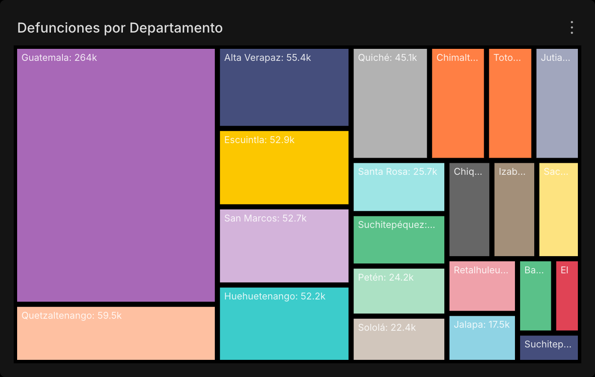
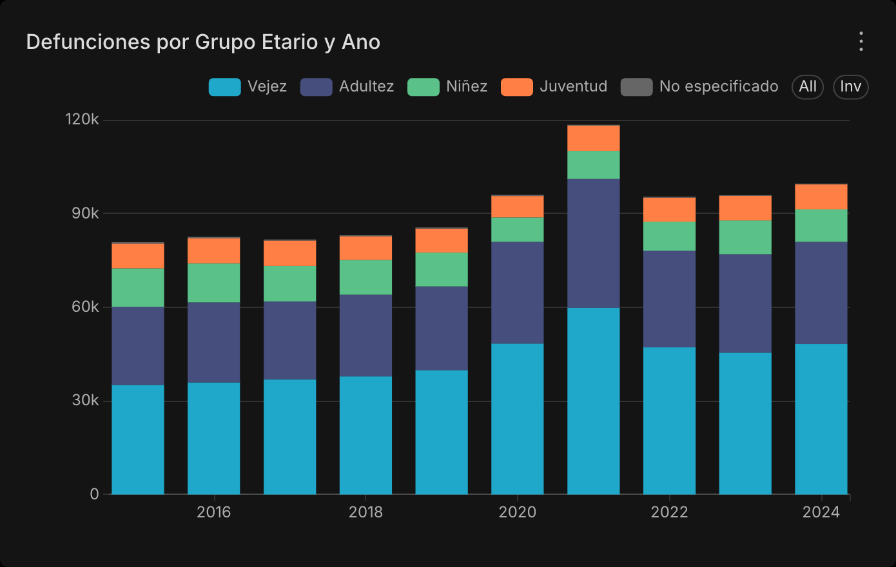
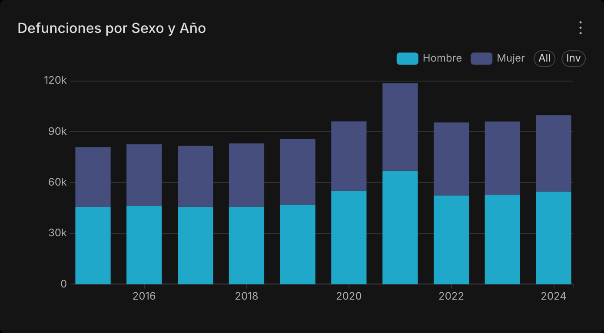
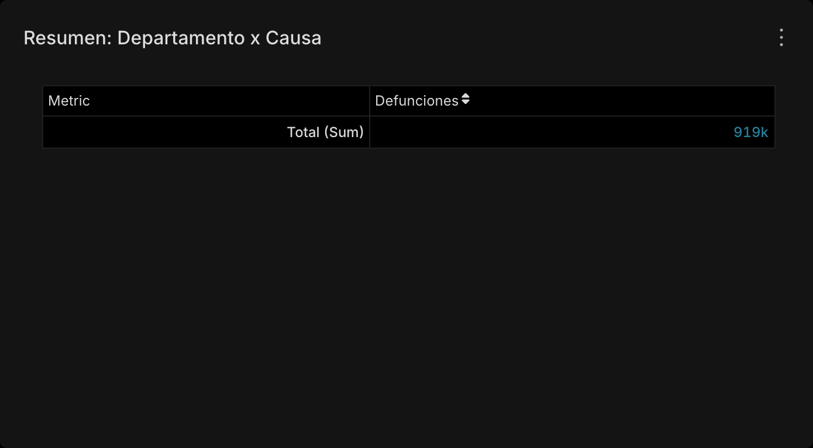
Insights esperados
- Concentración urbana: El departamento de Guatemala (área metropolitana) concentra la mayor cantidad absoluta de defunciones por densidad poblacional; para comparar riesgo entre departamentos haría falta una tasa con denominador poblacional departamental.
- Desigualdad en salud: Departamentos del corredor seco (Chiquimula, Jutiapa, El Progreso) o con alta población indígena (Quiché, Totonicapán) pueden mostrar tasas elevadas de mortalidad por enfermedades prevenibles.
- Impacto etario de COVID-19: Las barras apiladas deberían mostrar que el grupo de 60+ años fue el más afectado en 2020-2021, pero también podrían revelar un aumento en grupos de 40-59 años (población económicamente activa).
- Sobremortalidad masculina: Consistentemente, los hombres pueden mostrar mayor mortalidad anual que las mujeres; la brecha pudo ampliarse durante la pandemia (mayor exposición, comorbilidades, menor búsqueda de atención médica).
- Perfil departamental diferenciado: La tabla dinámica permite identificar si ciertas causas (ej. desnutrición, enfermedades infecciosas) predominan en departamentos específicos, lo cual es crítico para focalizar intervenciones de política pública.
Notas Metodológicas
Período de análisis
- Pre-COVID: 2015–2019 (5 años de referencia)
- Post-COVID: 2020–2024 (incluye años pandémicos y post-pandémicos)
- La dimensión
dim_tiempo.es_pre_covidsegmenta automáticamente los datos.
Normalización de causas
Las causas de muerte se normalizaron a GBD Nivel 2 (16 categorías) mediante un crosswalk desde códigos CIE-10. Detalles en Modelo Dimensional.
Limitaciones conocidas
- Subregistro: El INE depende del registro civil; defunciones no registradas (especialmente en áreas rurales) no aparecen.
- Causas mal definidas: Un porcentaje de defunciones tiene causa "R99" (CIE-10) o similar, limitando el análisis causal.
- Datos MSPAS post-2019: La tasa
tasa_por_100kde MSPAS solo está disponible hasta 2019; para 2020+ solo se tiene el conteo absolutodefunciones. - WHO limitado a 2022: Los datos de población WHO solo cubren hasta 2022, limitando el cálculo de tasas para 2023-2024.
- Panamá no incluido en dashboards: Por simplicidad, los dashboards priorizan Guatemala.
v_ihme_centroamericaprovee contexto regional con datos IHME.
Cumplimiento ético (EU Data Act)
- Los datos presentados son agregados a nivel departamental/causal/grupo etario.
- No se expone ningún registro individual ni información personal identificable.
- Las tasas se calculan sobre denominadores poblacionales publicados por WHO.